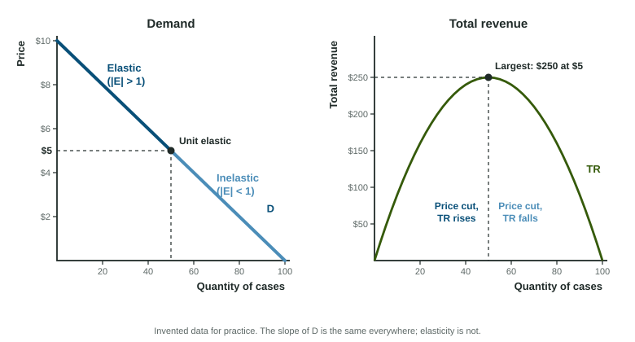

Two sellers raise prices by 10% on the same day. The gas station on the highway barely notices: drivers still fill up. A sparkling water brand at the supermarket loses a third of its sales, because five other brands sit on the same shelf. The law of demand says both lose some sales. Price elasticity of demand says how many.
The formula
Price elasticity of demand compares two percent changes:
Percents, not units, so the answer does not depend on whether you count in cases or dozens, dollars or cents. Because price and quantity demanded move in opposite directions, the raw ratio is negative. Read its absolute value: and describe the same weak response.
| Absolute value | Name | What it means |
|---|---|---|
| Greater than 1 | Elastic | Quantity changes by a larger percent than price |
| Exactly 1 | Unit elastic | The same percent |
| Less than 1 | Inelastic | Quantity changes by a smaller percent than price |
| 0 | Perfectly inelastic | Quantity does not change: a vertical demand curve |
| Infinite | Perfectly elastic | Any price rise loses every buyer: a horizontal demand curve |
Worked example: elasticity and revenue from a schedule. Juno Cases sells phone cases (invented data): 20 a week at $8, 40 at $6, 50 at $5, 60 at $4 and 80 at $2.
- From $8 to $6. Quantity: . Price: . Elasticity: . Elastic.
- Revenue there. Total revenue (TR) is price times quantity: dollars before and after. The price cut raised TR by $80.
- From $4 to $2. Quantity: . Price: . Elasticity: about 0.67. Inelastic. TR falls from $240 to $160.
- Largest revenue. TR is $160, $240, $250, $240 and $160: it peaks at $5, the unit-elastic middle.
Two slips cost points: putting the price change on top, and using unit changes (20 cases over $2) instead of percent changes. Write the formula first, then the numbers.
The total revenue test
Total revenue is what buyers spend and what sellers take in: . A price change pulls TR two ways: each unit sells for more or less, and the number of units moves the other way. Elasticity says which pull wins.
- Elastic demand: price and TR move in opposite directions. Raise the price and TR falls; cut it and TR rises.
- Inelastic demand: price and TR move in the same direction. Raise the price and TR rises.
- Unit elastic demand: TR does not change.
The test also runs backward: if a water utility raises its price and its revenue rises, its demand must be inelastic in that range.
Slope is not elasticity

A straight-line demand curve has the same slope everywhere, yet its elasticity changes along it. Near the top, the quantity is small, so adding 20 cases is a big percent, while a $2 price cut is a small percent of a high price: elastic. Near the bottom it is the reverse: inelastic. The midpoint is unit elastic, and that is where TR is largest. Compare two curves by steepness only when they pass through the same point.
What makes demand elastic
- Close substitutes. The most important determinant. One brand of sparkling water has many; insulin has none.
- Necessity or luxury. Necessities have inelastic demand; luxuries are easier to skip.
- Share of the budget. A rise in the price of salt hardly matters; a rise in rent matters a lot.
- How narrowly the good is defined. "Fizzle sparkling water" is more elastic than "drinks".
- Time to adjust. Buyers find substitutes over months that they could not find in a day, so demand grows more elastic with time.
The midpoint method (one route, labeled)
Using starting values, a price cut from $8 to $6 and a rise from $6 to $8 give different elasticities. The midpoint method divides each change by the average of the two values instead, so both directions agree. From $8 to $6: quantity , price , elasticity about 2.33. It is not clear that the exam requires this method; show whichever method you use, and both give "elastic" here.